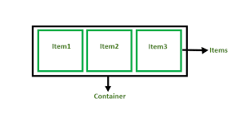
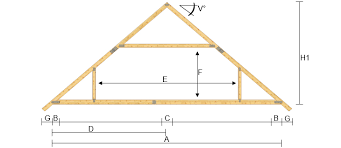

Github flow
GitHub flow är ett branch baserat arbetsflöde för att säkerställa
kvalitet i din hantering av repot. Genom att du skapar en branch där
du kan addera ditt arbete utan att påverka standard branchen.
- git clone (kopiera in koden från ditt repo på GitHub) -- klona ner ditt repo lokalt
- git checkout -b + "Namn på ny branch" -- skapa en ny branch samtidigt som du byter till den
- git add + "namn.txt" -- kommando för att välja ut vad som ska med + namnet på filen du skapat i din nya branch
- git commit -m "meddelande som beskriver branchen" -- Detta är en ögonblicksbild av vad som adderats till branchen
- git push -u origin + "namnet på din branch" -- Kommando för att pusha upp den nya branchen till Github där vårt centrala repo ligger
- Skapa en pull request -- En pull request ger andra projektmedlemmar möjlighet att se dina ändringar tillägg av kod. Den ger även möjlighet till feedback genom granskning.
- Merge -- När din pull request har blivit godkänd kan du nu merga din branch så den blir en del av den centrala som ligger på GitHub. Förutsatt att den inte innehåller konflikter som måste lösas innan.
- Delete your branch -- För att du inte av misstag ska jobba med en gammal branch. Samt indikera att du nu är färdig med den.
(GitHub Docs u.å.)
Flexbox
Flexbox är en endimensionell metod för styra din layout i rader och kolumner. Det gör din design intuitivt responsiv. För att jobba med flexbox behöver du skapa en container som innehåller element som kallas för items. Med diverse egenskaper kan du sedan styra din layout. Tex. display: flex; i din css-fil ger dig möjligheten att jobba med de underliggande egenskaperna. Så som justify-content: center; för att centera dina items horisontellt. (W3School, mdn-mozilla u.å.)
(geeksforgeeks u.å. Introduction to CSS Flexbox - geeksforgeeks.org)
DOM(Document Object Model)
När en hemsida laddas skapar webläsaren en Document Object Model av sidan. Det innebär att sidan konstrueras som ett träd av objekt. Vilket ger oss möjligheten att med JavaScript skapa dynamisk HTML. Med Javascript kan vi hämta och manipulera element i vår DOM. Exempelvis kan vi hämta vår "h1" och ändra vår rubrik för sidan.

The HTML DOM Tree of Objects u.å. https://www.w3schools.com/js/js_htmldom.asp
Fin kod
Med begreppet fin kod möjliggör vi inte bara för oss själva utan också andra att enkelt kunna se vad vi menar med koden. Det innebär att den är väl strukturerad. Kommenterad där så behövs, inte enbart för vår skull utan också för nästa person som jobbar med vår kod. Utöver detta finns ett begrepp som kallas för best practices. Det är i all sin enkelhet en uppsättning rekommendationer att följa för en väl strukturerad kod. Det ger vad man kallar för fin kod. (w3school, u.å.)Ramverk
I ett ramverk är koden uppdelad i moduler som kan användas beroende på
vad vi vill åstadkomma. Det gör användandet av ett ramverk väldigt
enkelt då byggstenarna finns färdiga redan. Vi behöver bara kalla på
dem för att använda dem.(csharpskolan, 2018) Det kan liknas med en
förfabricerad takstol då vi ska bygga taket till vårt hus.

(Ramverk- Arlanda Snickerifabrik - u.å. arlandagarage.se)
Ett remverk som vi redan stött på i utbildningen är Bootstrap. Det är väldigt populärt för HTML, CSS och JavaScript för att skapa responsiva layouter i en mobile-first approach.(w3school, u.å.)
Ytterligare ett ramverk är Sass. Det är ett tillägg för CSS. Genom att använda Sass kan vi reducera tiden vi lägger på CSS och därmed spara tid. Med Sass får vi också möjlighet att använda verktyg som inte finns tillgängliga i CSS. Som variabler exempelvis.